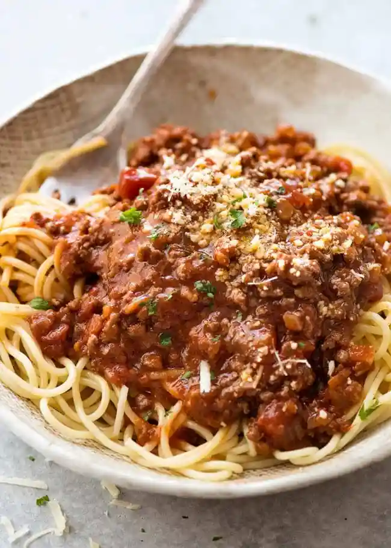

Spaghetti Bolognese

Description
Everyone needs a great everyday Spaghetti Bolognese recipe, and this is mine!
The Bolognese Sauce is rich, thick and has beautiful depth of flavour. It’s perfect for a quick midweek meal but even better if you can simmer it for a couple of hours!
- Ground beef
- Spaghetti
- Olive Oil
- Onion
- Tomato paste
- Red wine
Steps
- Put a pot with water and wait for it to boil
- Saute diced onion with olive oil on medium heat
- Add beef
- Cook beef unlit it's nice and brown
- Add seasoning of choice, tomato paste and a little bit of wine
- Add spaghetti to boiling water
- Cook bolognese for 10 minutes on low heat
- Cook spaghetti until it's nice and soft
- Serve spaghetti on plate and pour bolognese over it, and enjoy!